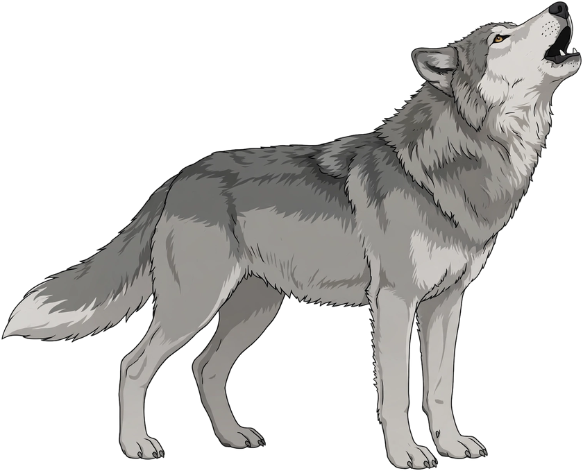

Proyek Multimedia: Gambar Bergerak dan Bersuara

👆 Klik serigalanya, dia lagi jalan-jalan santai tuh!
Tips: tekan Spasi untuk mengaum tanpa klik!
Visual serigala memakai dua gambar PNG, pose berjalan dan pose melolong. Background putih kedua gambar dihapus dengan program Python (metode flood-fill dari tepi gambar) sehingga menjadi transparan. Khusus pose berjalan, gambar dipotong lagi menjadi badan dan 4 kaki terpisah, sama seperti boneka animasi 2D, supaya kakinya bisa digerakkan satu per satu.
Aungan khas serigala diputar lewat HTML5 Audio dari rekaman lolongan serigala asli. Suara dianalisis memakai Web Audio API sehingga gelombang suara di mulut, equalizer di pojok panggung, denyut cahaya bulan, dan getaran layar ikut bergerak sesuai kerasnya suara.
Animasi CSS + JavaScript: berjalan dengan teknik walk cycle (setiap kaki diputar bergantian pada poros pangkalnya dengan pola trot, yaitu kaki diagonal bergerak sefase), badan naik-turun mengikuti langkah, pohon dan tanah bergeser (efek parallax), bintang berkelip, dan saat mengaum serigala berganti pose, kepalanya mendongak ke bulan.
Animasi yang sama juga dibuat sebagai video MP4 dengan program Python (Pillow, NumPy, SciPy, dan FFmpeg): 420 frame dirender satu per satu lalu digabung dengan suara lolongannya.
pip install pillow numpy scipy
python buat_serigala_bergerak.py